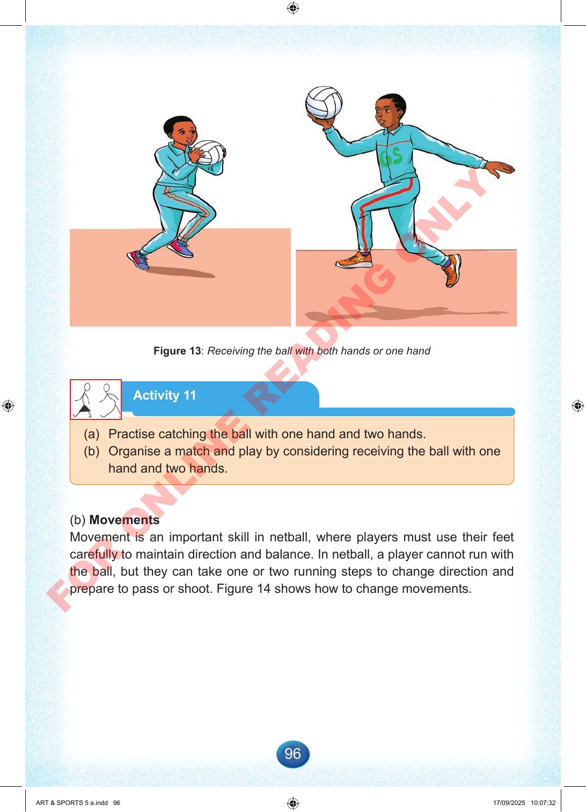

96
Figure
13:
Receiving
the
ball
with
both
hands
or
one
hand
Activity
11
(a)
Practise
catching
the
ball
with
one
hand
and
two
hands.
(b)
Organise
a
match
and
play
by
considering
receiving
the
ball
with
one
hand
and
two
hands.
(b)
Movements
Movement
is
an
important
skill
in
netball,
where
players
must
use
their
feet
carefully
to
maintain
direction
and
balance.
In
netball,
a
player
cannot
run
with
the
ball,
but
they
can
take
one
or
two
running
steps
to
change
direction
and
prepare
to
pass
or
shoot.
Figure
14
shows
how
to
change
movements.
ART
&
SPORTS
5
a.indd
96
ART
&
SPORTS
5
a.indd
96
17/09/2025
10:07:32
17/09/2025
10:07:32
F
O
R
O
N
L
I
N
E
R
E
A
D
I
N
G
O
N
L
Y